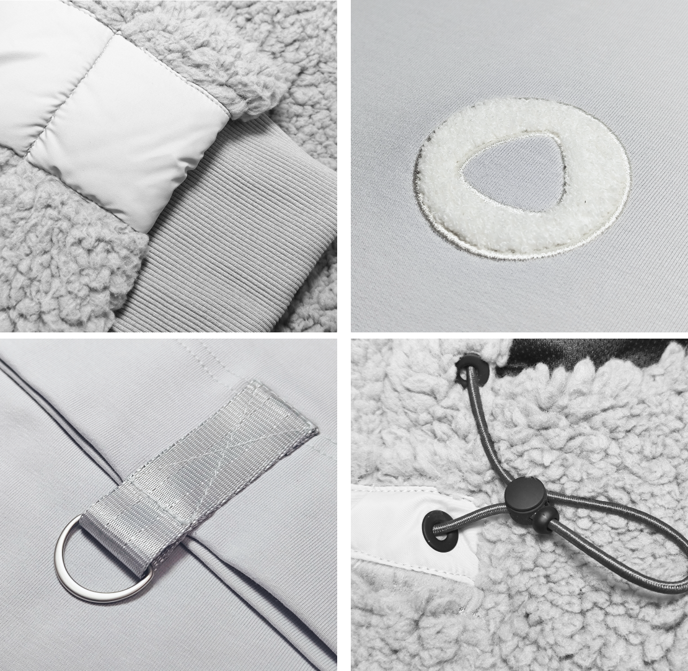

Yandex Alice
Подарки для Алисы
Проект начался с готовой идеи и жестких сроков. Концепт был передан в конце ноября, а результат должен был быть готов уже к новогодним праздникам — без возможности сдвигать дедлайны.
Задача заключалась не только в пошиве, а в сборке нескольких позиций в единый набор: утепленные анораки из шерпы на подкладе с лампасами и базовые футболки высокой плотности.
Каждое изделие должно было существовать как часть общего решения — с единой логикой, визуалом и уровнем исполнения. Ключевая сложность была во времени.


700 комплектов в разных размерах и цветах, с индивидуальными элементами — от тамбурной вышивки логотипа до функциональных деталей вроде стропы для пропуска и печатной информации об изделии — нужно было не просто произвести, а успеть собрать и отгрузить в срок.
В таких задачах важна не только точность, но и скорость принятия решений.
Процесс был выстроен так, чтобы не терять время на этапах: от принятия концепта до финальной отгрузки все работало как единая система. В итоге это проект, где результат определяется не сложностью изделий, а способностью уложиться в срок без потери качества.